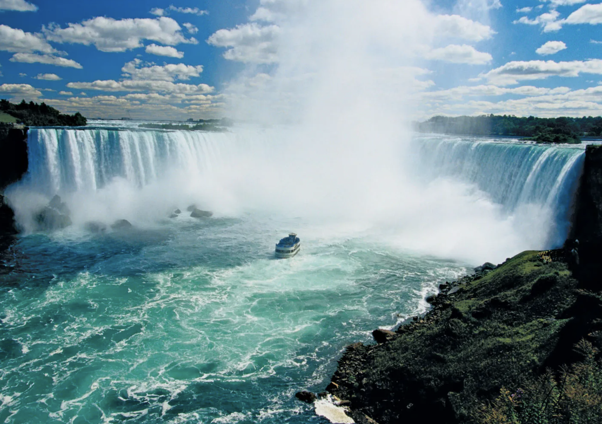
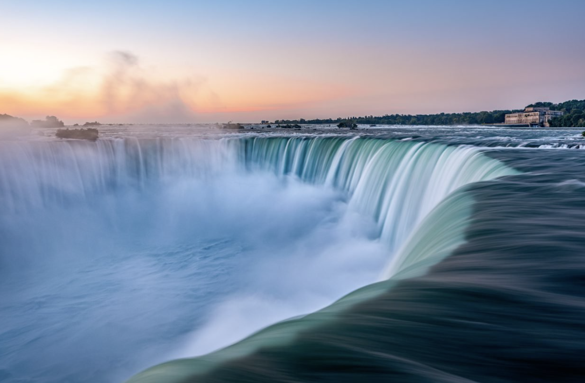

I love to travel and some of my favorite places to visit are:
Lake Tahoe
Reasons I love Lake Tahoe:
- Snow!
- Inner tubing
- Hiking
“When it comes to things to do in South Lake Tahoe, you can shred down the mountain from 10,067 ft. at Heavenly Mountain Resort’s peak or you can dive into the depths of Lake Tahoe. It’s more than 1600 ft. deep, making it one of the deepest lakes in North America. Needless to say, there’s plenty of things to do in Lake Tahoe above and below the surface.”
“All parts of Lake Tahoe are beautiful and have something unique to offer. South Lake Tahoe is popular for its ski resorts like Heavenly, Sierra at Tahoe and Kirkwood ski resorts. South Lake Tahoe is also popular for its restaurants, shopping, casino resorts and vibrant nightlife.”


Niagara Falls
My favorite things in Niagara Falls:
- Rainbow
- Sunset
- Falls
 
Yellowstone
My favorite things in Yellowstone:
- Sunset
- Cauldron